Corruption
We published this page in October 2016, and fully revised it in September 2025.
There are many forms of corruption, which makes it difficult to define in simple terms. However, most definitions agree that corruption means abusing a position of power for personal benefit, which breaks the trust of an organization, community, or entire country.
Data on corruption
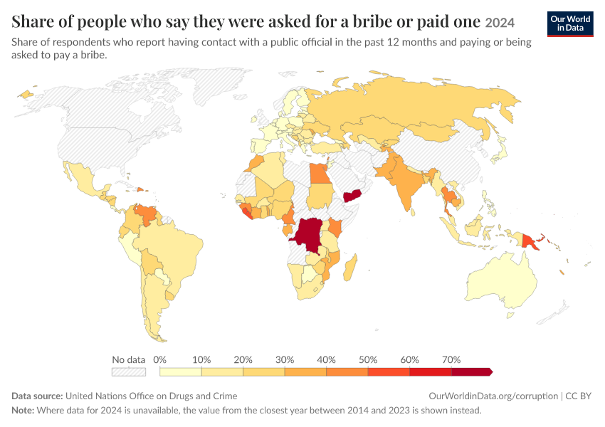
Share of people who say they were asked for a bribe or paid one
United Nations Office on Drugs and Crime

Share of firms that report being asked to pay a bribe
World Bank Enterprise Surveys

Political Corruption Index
Varieties of Democracy Project
One common form of corruption is bribery, where a public official receives money or gifts in exchange for favors, like approving permits, waiving fines, or speeding up services. Another common type is embezzlement, where officials steal public funds.1
Some corruption is less obvious and may not even be illegal. For example, politicians might receive campaign donations before passing laws benefiting the donors. Or public officials might be influenced by lobbyists who offer high speaking fees or promise well-paid jobs after leaving office.2
Corruption often involves two sides. On one side are typically public officials who misuse their positions. These can include elected leaders, such as presidents or members of parliament, as well as appointed bureaucrats, like teachers, healthcare officials, judges, police officers, tax collectors, or regulators.
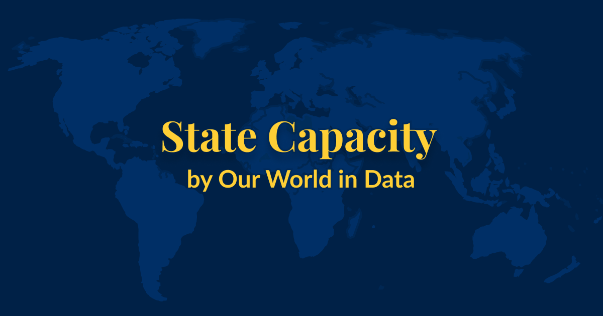
State Capacity
Do governments worldwide have the ability to implement their policies? How has this changed over time?

Democracy
How has democracy spread across countries? Are we moving towards a more democratic world? Explore global data and research on democracy.
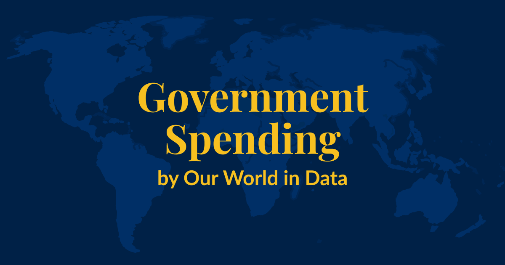
Government Spending
What do governments spend their financial resources on?
On the other side are the people who pay or offer bribes in return for preferential treatment. These might be ordinary citizens looking to avoid penalties, get permits, or secure public-sector jobs. They can also be businesses seeking government contracts or favorable regulations.
Even though corruption benefits those directly involved, it causes harm to society overall. Some argue that corruption can speed up slow bureaucracies or reduce conflict and prevent violence in certain situations. But in most cases, corruption does more harm than good. It discourages people from following the rules, weakens institutions, and reduces trust in government. It also worsens public services for those who cannot afford to pay, and can increase inequality and slow down economic growth.3
This page presents data and visualizations on how corruption is measured, how it differs across countries, and how it may have changed over time. We also discuss the strengths and limitations of different sources. While no single dataset can fully capture such a complex issue, we highlight when each source might be most informative.
How common is corruption around the world?
How often do people pay bribes?
Measuring corruption is challenging because it usually happens in secret. Those involved typically try to hide their actions, especially when these actions are illegal or unethical, and rarely leave any official records. This makes it difficult for researchers and policymakers to know how widespread corruption is.
But one way to learn about corruption is to ask people directly about their experiences. While some may be reluctant to share them, many are willing to say whether they have been asked to pay a bribe, especially if they remain anonymous. People are sometimes even willing to admit to paying a bribe, particularly if they did so under pressure, or to access a public service to which they were legally entitled.
Asking people directly is the approach taken by the United Nations Office on Drugs and Crime (UNODC). The UNODC brings together national surveys that ask whether people have paid or been asked to pay a bribe in their interactions with public officials. These interactions can involve everyday situations, such as visiting a doctor, being stopped by the police, or applying for official documents like a passport.
The map below shows the large differences between countries in these surveys. In much of Europe, and a few other countries around the world, reports of bribery are rare: fewer than 10% of people who recently dealt with a public official report having paid or being asked for a bribe.
In many other places, however, bribery is far more common. In some countries, more than half of those interacting with public officials report being asked for a bribe or paying one.
While these surveys offer a helpful perspective — and are the official source used to track progress on the UN Sustainable Development Goals — they also have important limitations. For instance, as we explain below in more detail, people may hesitate to admit to paying a bribe and may interpret the questions differently across countries. The national surveys can also differ in their methods and coverage, which limits their comparability between countries.
Because of this, the numbers here may not accurately reflect the actual differences in how common bribery is. For example, Peru is a notable outlier, reporting much lower bribery rates than its regional neighbors. This doesn’t necessarily mean the data is wrong, but it suggests we must be careful when interpreting it, and may want to consult more sources.
How do people feel about corruption?
Knowing whether people have been asked to pay a bribe is helpful, but knowing what they think about bribery adds an important layer. Even when individuals understand bribery is illegal or consider it morally wrong, they may still justify it as necessary or harmless. And if bribery is considered acceptable or routine, people may be more likely to offer or accept it and less likely to face consequences.
The map below shows data from the Integrated Values Surveys on how people from different countries feel about bribery. They were asked to rate how justifiable they think it is to accept a bribe, using a scale from 1 (never justifiable) to 10 (always justifiable). The chart shows the share of people in each country who selected a score of 1, believing that accepting a bribe is never justifiable.
In most countries, most respondents say taking bribes is never justified — but in other countries, many think it can be acceptable in some cases.
How often do firms pay bribes?
Corruption doesn’t just affect people in their interactions with public officials. It also influences how businesses operate. Companies may be asked to pay bribes or choose to pay them to obtain a government contract, license, or exemption from regulations.
The World Bank Enterprise Surveys ask companies about their experiences with corruption. As with individuals, businesses are generally more likely to admit being asked to pay a bribe than to say they paid one.
The map again shows that experiences vary widely. Fewer than 5% of firms in many countries report being asked for a bribe, but this number is much higher in some places: it’s more than 20% in dozens of countries, and in a few countries, it’s more than half.
As with surveys of individuals, these results can underestimate how common corruption is. Some companies may not feel safe admitting their experiences, even anonymously, and differences in how surveys are run or understood can limit the comparability across countries.

How do experts assess corruption?
It helps to go beyond personal experiences and public opinion to get a fuller picture of corruption. Some forms of corruption, especially those involving high-level officials, are not always visible to the public.
This is where expert assessments can add an important perspective. They’re certainly not perfect either — experts might rely on small networks, be influenced by the media, or have their own political views — but they often have a deeper understanding of corruption in a country. Many experts follow national politics and the media closely, talk to people in government and civil society, and sometimes do their own investigations.
One major project that relies on experts is Varieties of Democracy (V-Dem). This initiative surveys hundreds of experts worldwide, asking them how common bribery, embezzlement, and misuse of office are among different groups of public officials: chief executives and government ministers, lawmakers, judges, and bureaucrats. Their answers are then combined into a single index, which measures overall political corruption in each country on a scale from 0 to 1, with higher values indicating more corruption.
Using this data, the map below again shows clear differences between countries. In many European countries, experts report that corruption in the form of bribery and embezzlement is relatively rare across the branches of government. In contrast, experts describe corruption as widespread in other countries, especially in Africa and Asia.

Other initiatives also provide corruption data based on expert ratings. One example is Transparency International’s popular Corruption Perceptions Index:
Is corruption becoming more or less common?
It is difficult to say with confidence whether corruption is increasing or decreasing over time. That is partly because most global data only covers recent years, and corruption is difficult to measure consistently over time.
Changes in the data might show real shifts in corrupt behavior, but they can also come from changes in how people see or report corruption. People might become more or less willing to admit to it, or more or less opposed to it, and the media might become better or worse at exposing it. 4
Still, long-term data from the Varieties of Democracy (V-Dem) project can give us a sense of how corruption has changed over time according to expert assessments. To deal with some of the comparability issues, V-Dem asks experts standardized, detailed questions and provides clear guidance on how to score different situations.
The maps show how V-Dem’s experts assess political corruption in 1970 compared to the present. Experts identify increases in corruption in some countries and decreases in others. You can explore specific countries by switching to the line chart. But, importantly, you should keep in mind that no single measure can fully tell us the story of how corruption changes over time.
In our related article, you can read more about how corruption relates to broader development outcomes. While it does not cover the most recent research on the topic, it highlights key patterns and historical examples that remain relevant:
What to know when using corruption data
What are the different approaches?
Most of the data on corruption comes from surveys that gather information on people’s experiences or perceptions. These surveys differ in who they are aimed at: some ask ordinary citizens, such as those conducted by the United Nations Office on Drugs and Crime; others focus on businesses, like the World Bank Enterprise Surveys; and some rely on expert assessments, including those from V-Dem, the World Justice Project, and the Unbundled Corruption Index. Other projects do not rely on a single expert survey, but aggregate different surveys into one overall measure. Examples include the Corruption Perceptions Index and the Worldwide Governance Indicators.5
A different approach is to collect data on legal and institutional responses to corruption, such as arrests, prosecutions, and anti-corruption legislation. The United Nations Office on Drugs and Crime compiles some of this information.
How do different approaches compare?
Comparing different approaches to measuring corruption allows us to see where their assessments converge and differ.
For example, this first chart compares two different surveys on bribery: one of regular citizens, from the United Nations Office on Drugs and Crime, and one of businesses from the World Bank Enterprise Surveys.
The chart shows that the two indicators have some relationship: there are no countries where bribery is common for firms but entirely absent for individuals, and vice versa. Both surveys also suggest that bribery is, for instance, less common in European countries.
However, the relationship is weak. The chart shows a lot of variation. For example, in countries like Egypt and Thailand, people report relatively high levels of bribery in everyday interactions, while businesses don’t. In contrast, in countries like Mali and Vietnam, the pattern is reversed, and firms report frequent bribery while individuals do so less often.
Generally, for any given level of bribery reported by individuals, the level reported by firms can vary greatly, showing that these indicators do not measure the same phenomenon.
The next chart compares the survey responses from citizens about bribery to expert survey data from V-Dem.
Again, we see alignment in some areas: in many countries, experts and individuals point to relatively low levels of corruption. For example, in most European countries, both groups see bribery as rare.
However, in other countries, the two sources diverge. Few people report being asked for bribes in countries like Bangladesh, Honduras, and Nigeria, but experts still consider these countries highly corrupt.
This doesn’t mean the experts or the general public are wrong. In part, that’s because the approaches aren’t measuring the same thing: individuals are asked about their personal experiences with bribery, while experts are asked to assess broader institutional patterns, including corruption among political leaders. So even if “petty” bribery may be rare, “grand” corruption might still be a serious issue.
Other factors could also play a role, such as how questions are phrased or understood, what information respondents have, and how willing people are to report corrupt practices.
These differences remind us that each measure has its blind spots, and no single source can offer a complete picture.
What are the strengths and weaknesses of different approaches?
Surveys of citizens and businesses, such as those by the UNODC and the World Bank, can ask about their personal experiences with corruption or general views. These surveys are intuitive because they reflect real-life situations and public opinion.
However, they have some limitations. People might not admit to paying a bribe, which can lead to underreporting. There is also the risk that people across countries interpret the same question differently. And people’s general opinions may not accurately show how widespread corruption is — especially when it comes to high-level corruption, like the theft of public funds, which most people won’t have personal experiences with.
Expert surveys, like the ones by V-Dem, take a different approach. They rely on experts' deep knowledge about corruption in a country. These surveys are easier to conduct consistently across many countries and over longer periods. As a result, they often provide broader coverage, both geographically and historically.
But expert surveys have their own limits. Their results can be harder to interpret and can be shaped by the experts’ own biases — like the media’s narratives, their limited personal networks, or their political views. And while experts often know more, corruption is secretive by nature, so their picture of it is never complete.
Some projects, such as the Corruption Perceptions Index, try to combine multiple expert surveys into one overall score. This approach has the advantage of including more expert views. However, it also combines data from surveys that may ask very different questions, which risks mixing information that isn’t comparable, making the final score difficult to understand. 6
What data source to use?
Different sources capture different aspects of corruption and have distinct strengths and weaknesses. Some are better suited to answer particular questions — but no single source can tell the whole story.
To understand how people experience corruption in their day-to-day life, you can look at data from the United Nations Office on Drugs and Crime.
If you are more interested in what people think about bribery and its acceptability, then the data from the Integrated Values Surveys provides relevant insights.
To understand how businesses encounter corruption, the World Bank Enterprise Surveys offer relevant data.
If you are interested in harder-to-observe forms of corruption, like the embezzlement of public funds or high-level corruption, then expert surveys, such as those from V-Dem, are more informative. Compared to Transparency International’s Corruption Perceptions Index, V-Dem asks more specific questions, producing more meaningful scores.
In all cases, it is important not to put too much weight on any single source. Each has its blind spots, and a good analysis requires looking closely at how the data was collected, what it captures, and what it might miss. Combining different perspectives and discussing what we don’t know is best when trying to understand something as complex and hidden as corruption.
Key charts on corruption
See all charts on this topic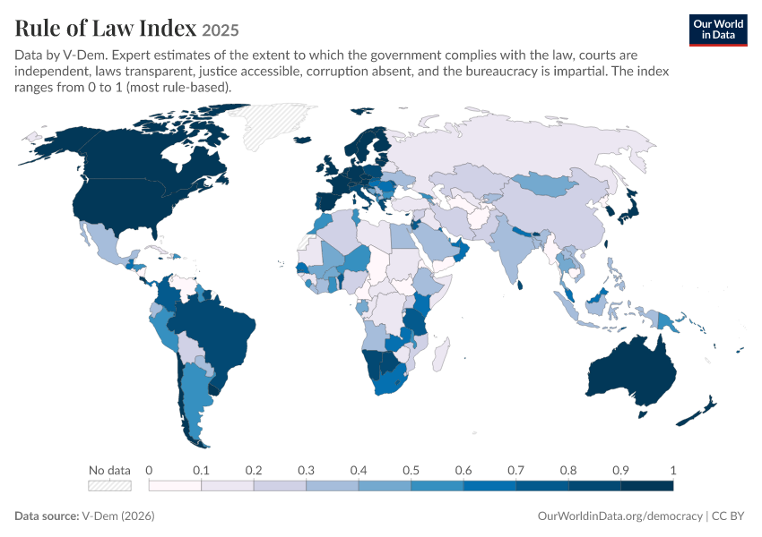
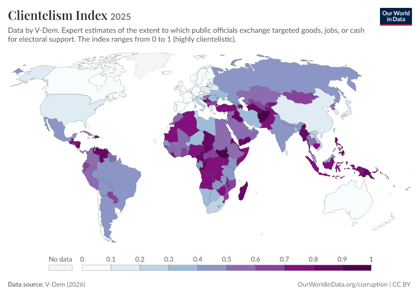
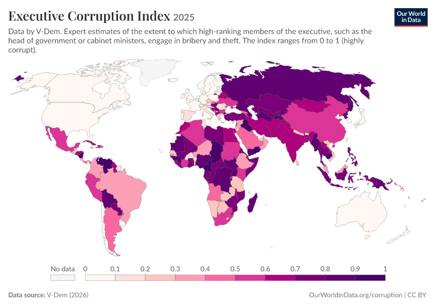
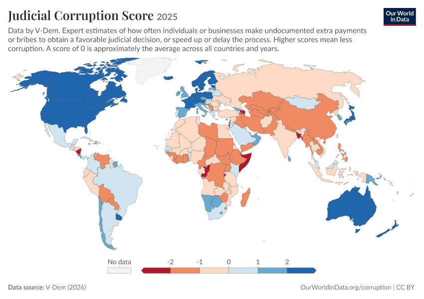
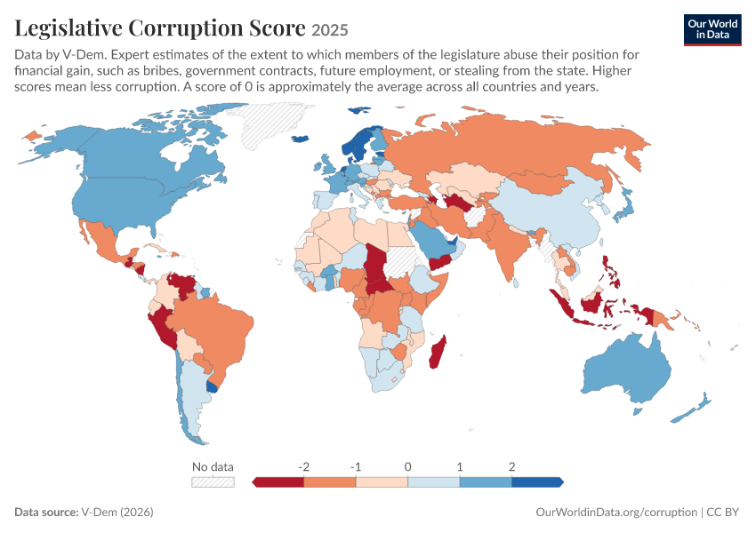
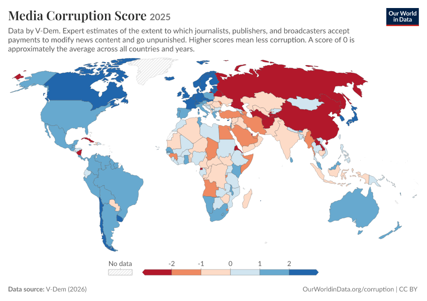
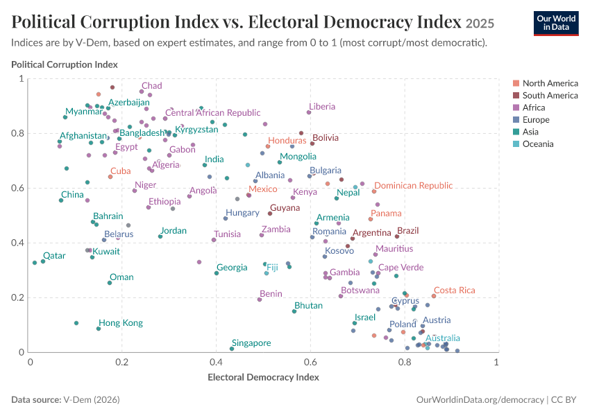
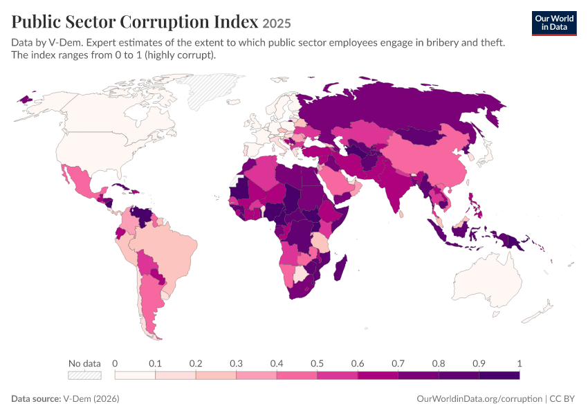
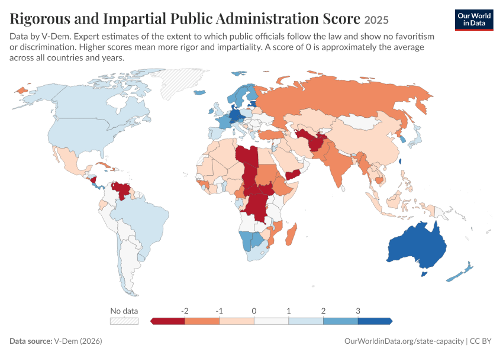
Featured data on corruption
Acknowledgments
We thank Maurice Dunaiski, Edouard Mathieu, and Max Roser for their helpful suggestions and ideas.
Endnotes
The focus is usually on public officials. Still, private actors can also engage in corruption, such as when a company executive awards a contract for a bribe or when an employee steals from their company.
For a more detailed discussion of the different forms of corruption, see: Ray Fisman and Miriam A. Golden. 2017. Corruption: What Everyone Needs to Know.
For a deeper discussion, see:
Yuen Yuen Ang. 2020. China’s Gilded Age. The Paradox of Economic Boom and Vast Corruption.
Douglass North, John Joseph Wallis, and Barry R. Weingast. 2009. Violence and Social Orders.
Ray Fisman and Miriam A. Golden. 2017. Corruption: What Everyone Needs to Know.
For more information on the challenges of measuring corruption over time, see: Maya Dalton and Justin Esaray. 2025. Measuring Changes in Corruption over Time. Working Paper.
For more information on the various approaches to measuring corruption, see:
Maya Dalton and Justin Esaray. 2025. Measuring Changes in Corruption over Time. Working Paper: 7-12.
Benjamin A. Olken and Rohini Pande. 2012. Corruption in Developing Countries. Annual Review of Economics 4: 479-509.
Kelly M. McMann, Daniel Pemstein, Brigitte Seim, Jan Teorell, and Staffan I. Lindberg. 2022. Assessing Data Quality: An Approach and An Application. Political Analysis 30(3): 426-449.
José-Miguel Bello y Villarino. 2021. Measuring Corruption: A Critical Analysis of the Existing Datasets and Their Suitability for Diachronic Transnational Research. Social Indicators Research 157(2): 709-747.
Paul Heywood and Jonathan Rose. 2014. “Close but no Cigar”: the measurement of corruption. Journal of Public Policy 34(3): 507-529.
For more information on the strengths and weaknesses of different approaches to measuring corruption, see:
Kelly M. McMann, Daniel Pemstein, Brigitte Seim, Jan Teorell, and Staffan I. Lindberg. 2022. Assessing Data Quality: An Approach and An Application. Political Analysis 30(3): 426-449.
Dilyan Donchev and Gergely Ujhely. 2014. What Do Corruption Indices Measure? Economics & Politics 26(2): 309-331.
Charron, Nicholas. 2016. Do corruption measures have a perception problem? Assessing the relationship between experiences and perceptions of corruption among citizens and experts. European Political Science Review 8(1): 147-171.
Aart Kraay and Peter Murrell. 2016. Misunderestimating Corruption. Review of Economics and Statistics 98(3): 455-466.
José-Miguel Bello y Villarino. 2021. Measuring Corruption: A Critical Analysis of the Existing Datasets and Their Suitability for Diachronic Transnational Research. Social Indicators Research 157(2): 709-747.
Cite this work
Our articles and data visualizations rely on work from many different people and organizations. When citing this topic page, please also cite the underlying data sources. This topic page can be cited as:
Bastian Herre, Veronika Samborska, and Esteban Ortiz-Ospina (2016) - “Corruption” Published online at OurWorldinData.org. Retrieved from: 'https://ourworldindata.org/corruption' [Online Resource]BibTeX citation
@article{owid-corruption,
author = {Bastian Herre and Veronika Samborska and Esteban Ortiz-Ospina},
title = {Corruption},
journal = {Our World in Data},
year = {2016},
note = {https://ourworldindata.org/corruption}
}Reuse this work freely
All visualizations, data, and articles produced by Our World in Data are completely open access under the Creative Commons BY license. You have the permission to use, distribute, and reproduce these in any medium, provided the source and authors are credited.
The data produced by third parties and made available by Our World in Data is subject to the license terms from the original third-party authors. We will always indicate the original source of the data in our documentation, so you should always check the license of any such third-party data before use and redistribution.
All of our charts can be embedded in any site.